software Developer
St. Xavier’s College, Manonmaniam Sundaranar University, Tirunelveli, India.
Gandhigram Rural Institute - Deemed University, Gandhigarm, Dindigul, India.

SOFTCELL TECHNOLOGY, CHENNAI, INDIA
Otago Polytechnic, Dunedin, New Zealand
I am very excited that it is a first day at the project room. Adon gave a presentation about all ongoing projects and about different project groups. I met people from various project groups and gathered information about what they are all doing. All the projects are very interesting and useful. They all have a good purpose (i.e., solve specific problems). At the end of the session, I was assigned a mobile application project that will be used by the new students at the Otago polytechnic to explore the polytechnic campus. I am going to develop this mobile application using React native and Django for web admin page.
I installed the react native software through command prompt using the Getting
Started tutorial
given by Facebook. I set up the configuration for the necessary system paths to make the command prompt ready to run all
the react native commands. Then, I installed Django using the pip command. After successful installation,
I created a ‘hello world’ project by following the steps in above given tutorial. But, I had
the following issue while running the application in android emulator.
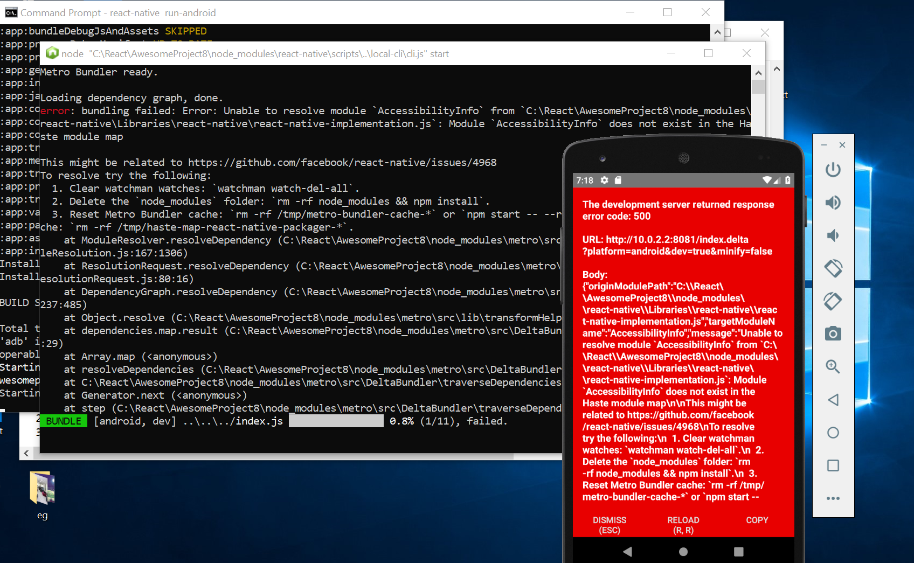
I tried several solutions such as changing the jdk and sdk paths, re-installing the package
to fix this issue. But it didn’t seem to be working. The hello world application kept failing
despite my best efforts.
I found the reason behind the error that I had last week and resolved it successfully. The error occurred because the development
version of android conflicted with the created react native application. So, I created a new
project with stable version (0.55.4) of react native instead of the latest one which solved the
conflict problem.
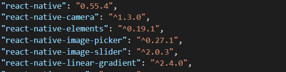
What I learnt from this is that I must always need to do some research about the stable
version and use that stable version.
I named this project as “BITCampus”. I also installed two more packages which are really
useful for the UI design. These packages provide lot of in-built elements that can be used for
designing user interfaces (e.g. provision of avatar tags to display images and listviews that
can be populated easily).
1. React
native elements
2. Native base
Screenshot of avatar element
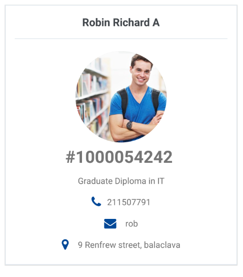
code snippet of avatar element
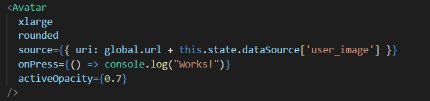
I started doing the UI design. I decided to have four pages in my application.
1. Home screen - contains introduction about the polytechnic
2. Campus screen - displays reconnaissance questionnaire
3. Gallery screen – displays some of the campus photos and their descriptions
4. User screen - displays logged in user information
Designing in React Native is more like HTML programming. Because, I already know HTML
and I am good at designing web pages, it is a bit easy for me to understand the React Native
design. In addition, React-Native-Elements and Native-Base have several built-in elements (like
bootstrap framework for CSS) and it made my job easier for designing pages quickly.
I designed the home screen with parallax effect using react-native-parallax-scroll-view
I designed the gallery screen using React-Native-Shared-Element-Transitions
below code snippet looks similar to HTML element
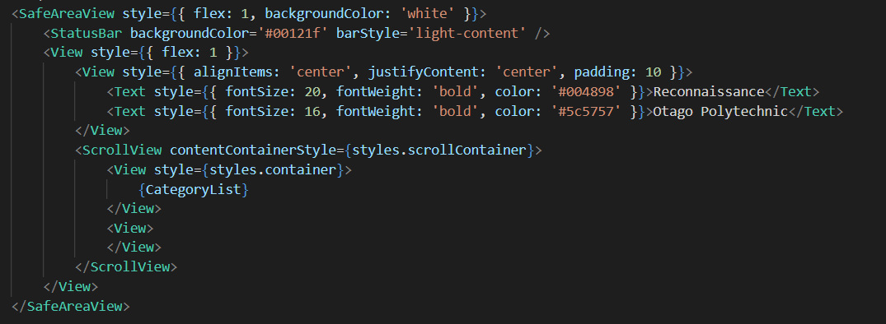
screens shot of
Home, Gallery and User screens
 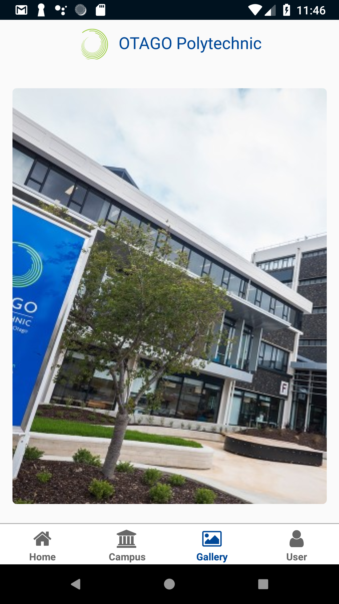
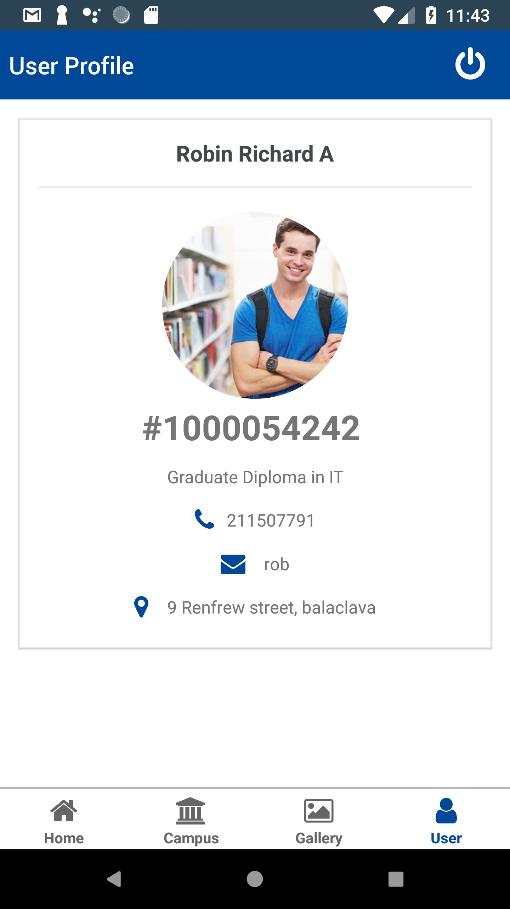
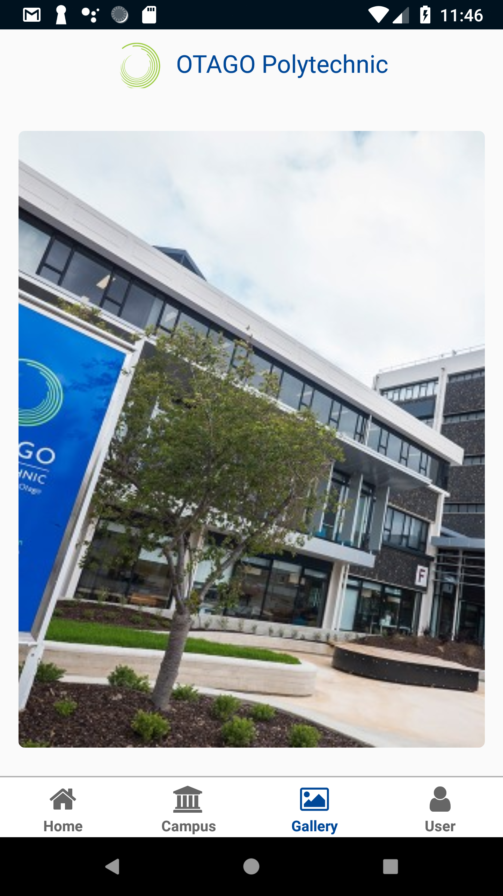
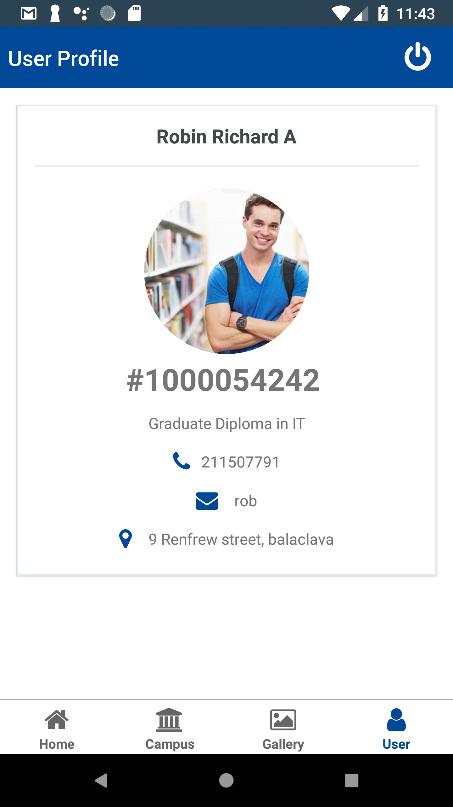
I have designed all the screens and now I am trying to connect them by providing a menu (i.e. navigation menu). I decided
to provide the bottom tab navigation inspired by Instagram App.
Instagram App screen
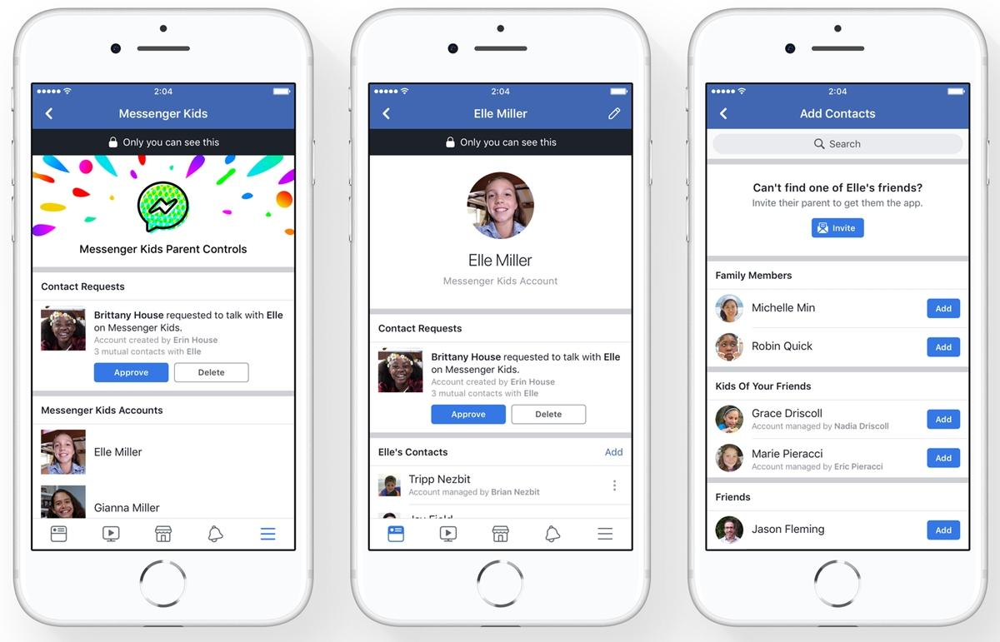
React Native provides bottom-tab-navigator
package to make this type of navigation easier to implement. I initially used the png images for the menu icon. Then I replaced
this with FontAwesome icons provided by NativeBase. This is because FontAwesome doesn’t take
much space when compared to images and also these icons look better than the png images.
Code snippet for Fontawesome Icons
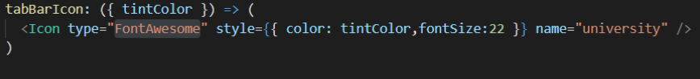
I am having an issue on Campus screen navigation. Campus screen contains three sub-screens
inside it.
1. Category screen - displays the question categories
2. List screen - displays list of different sections of selected category
3. Reconnaissance screen - displays one or many questions for the selected section
I am unable to work out how to implement the functionality to select one of three options
from menu (i.e., when there are more than one option to be selected from a menu). When an option
is chosen it should take the user to the correct screen. I am still looking a solution to solve
this navigation problem.
Screenshot fro Navigation problem
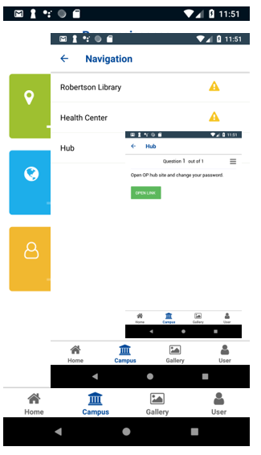
I did some research about how to handle the multiple screens navigation without changing the selection option in the bottom
tab navigation menu. I finally found a solution, which is a third party package called react-native-router-flux
. This package provides router and scene facility to navigate to multiple sub-screens within one react navigation menu (see
code snippet below).
Code snippet:
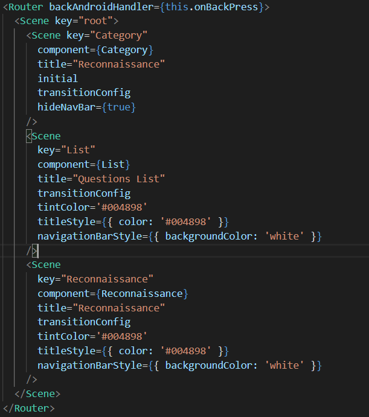
Now I can navigate through all my screens with bottom tab navigation and react native
router flex. Yay!!!
I am going to use MySQL database in Kate server. I have planned to have five main tables in the database.
1. User (stores registered student details)
2. Category (stores all the category information)
3. Section (stores section details with category reference)
4. Question (stores questions with section reference)
5. Reconnaissance (stores the student response for the questions referenced with question
and user details)
Django allows us create various databases like MySQL and SQL Server based on the model
defined in the Django application. So, I created a Django project named “Reconnaissance” and
created a model with all the table fields and relationships (as shown in the code below) and
connected it in MySQL database using the migrate command. I am familiar with Django framework.
So, it makes it easy to work on this Django application.
Django Code snippet for database model definition is given below.
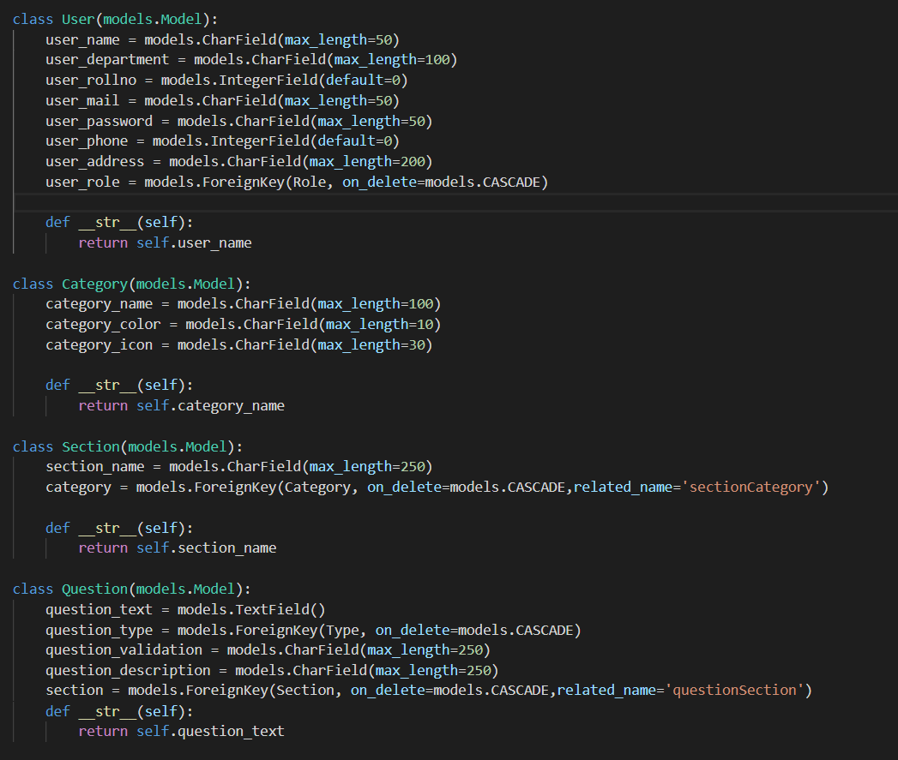
I have started developing the administrator’s (referred to as admin hereafter) web application for this project. This application
helps the admin to a) create all the questions for the reconnaissance app and b) generates the
report of student’s reconnaissance submission in pdf form after the users had submitted answers
from the mobile application.
I am using SB
Admin template for admin page UI design. I also started coding to create web pages for
all the tables using CRUD operations. This web application also provides the API for the mobile
application to display questions and add the response of the students into the database.
Screenshot of web app.
Dashboard:
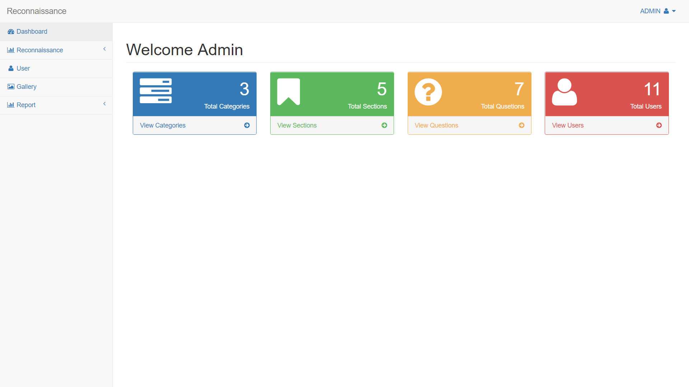
I am currently working on creating category, section, question and user webpages to facilitate the admin user to create new
entries and update the existing entries in the database.
Category page
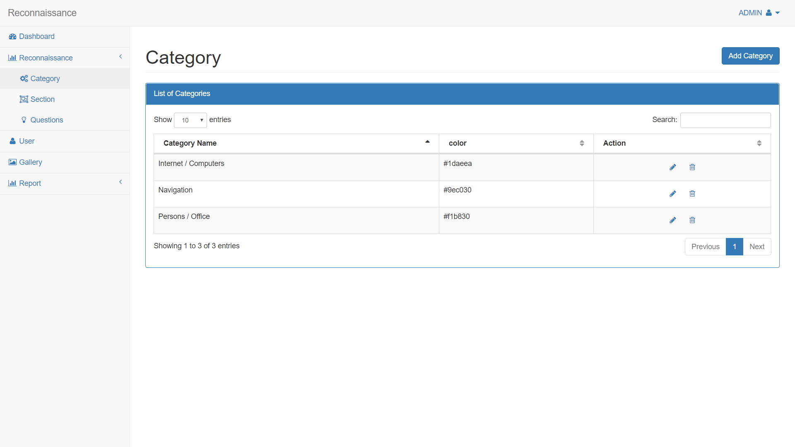
Section page
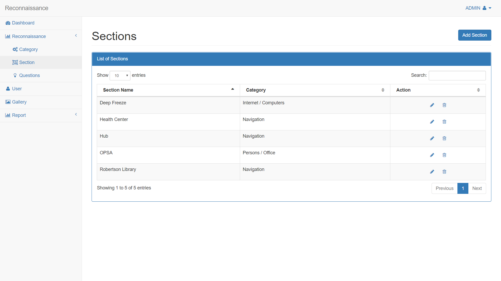
Question page
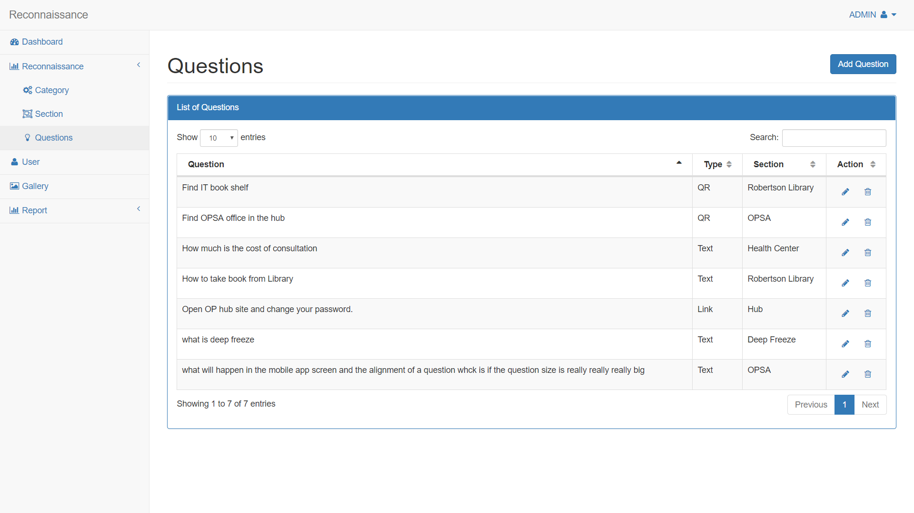
The profile picture upload option on user creation is not finished yet and will look
at it once I complete the mobile app development.
Creating API for fetching all the information from the database for several operations in mobile app. They are
1. User registration – allows user to register for an account
2. Login validation – checks whether a user’s credentials are valid
3. Display category sections and questions from the database
4. Add student’s responses to the questions into the database
These APIs return the responses in JSON format. JSON responses are easier to iterate
in React Native and display them in on the user interface.
Django Code snippet of some API
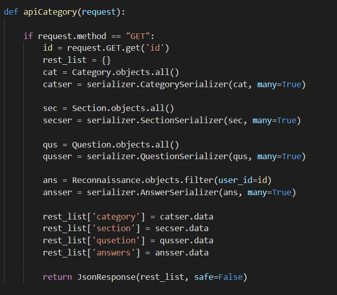
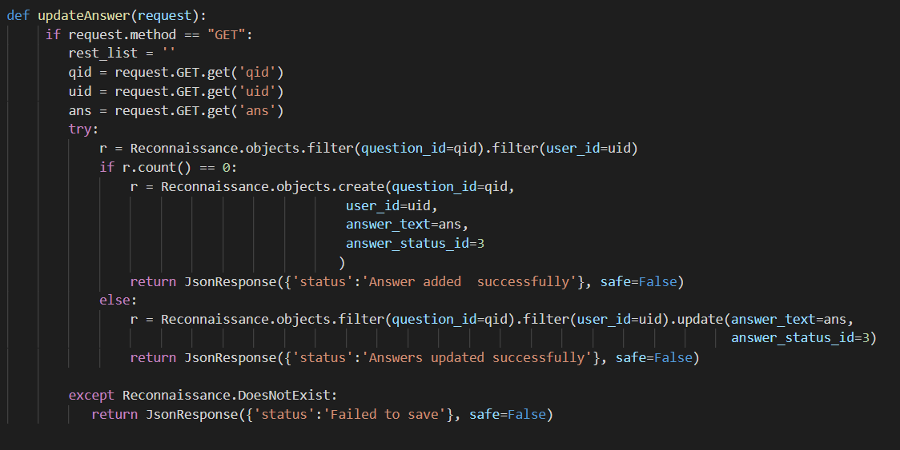
Now, I am trying to connect to the web API (server side) from the mobile app (client side). I can connect to the local Django server’s web API to the mobile app running in emulator in the same machine. But, I am having an issue on connecting the API from mobile app which is installed in a mobile phone. In other words, the set up works on the emulator but not on the phone. The reason is that my web application is not running as a live server on the internet. I tried to run Django server application in Kate server but again it isn’t publicly accessible (i.e., can only be accessed within the Polytechnic network). To solve this issue, I need to host my Django application in a public server on the internet so that I can access it from anywhere in the world.
I searched for free hosting for Django and I found a solution with PythonAnywhere
which allows the user to host one python application for free. So, I decided to host my back-end service on PythonAnywhere.
I tried to upload my existing Django application to the server but initially it didn’t
work because of the configuration set up (i.e., folder path that is mentioned in the configuration
set up was wrong). After a few attempts I successfully hosted my web application on PythonAnywhere
server.
But now I am having another issue. I can’t connect to the database in the Kate server
because it can’t be accessed from public domain. So, I changed my database to SQLite which comes
in-built with Django and I migrated my model into the SQLite database.
Now my Django web admin website is running on the PythonAnywhere server
and I am able to connect it from mobile app and fetch information from the database using the APIs created already.
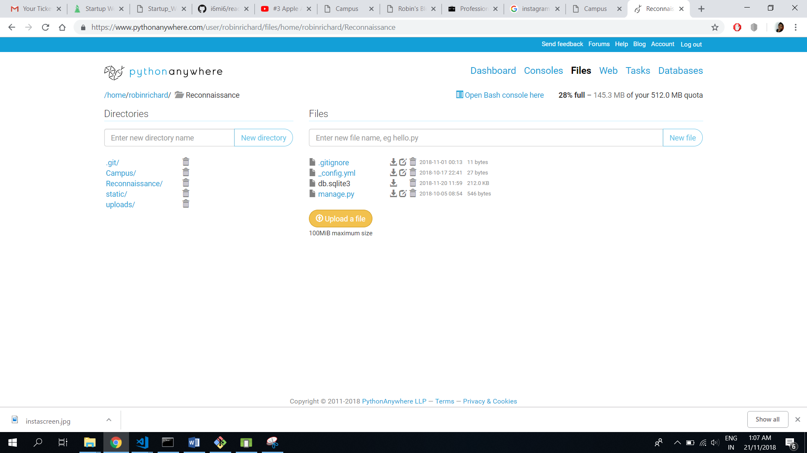
I planned and implemented two screens related to users logging into the system. The first one is the login page for the existing
users to authenticate in the mobile application and the second one is the registration page for
the new user to create an account.
I created a separate navigation called ‘stack navigation’ for login and registration
pages and created a switch navigator to switch between bottom tab navigation which is already
created and the newly created stack navigation. The logged-in users will get the bottom tab navigation
and who are not logged in will get the stack navigation.
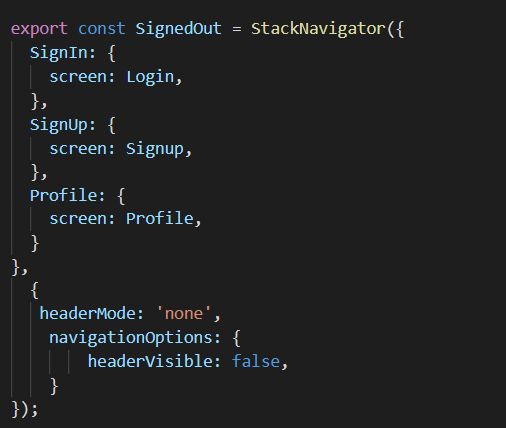
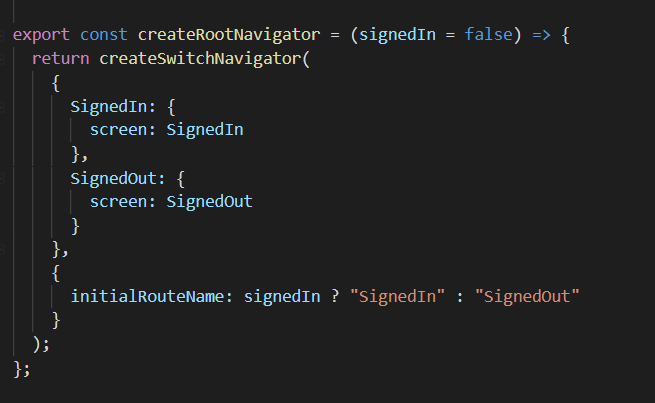
To maintain the log in session I am using “AsyncStorage” provided by react native to
store information in the mobile storage.

Now I can login to the application by using the user created in the Django admin site and
validating the username and password by using the API created.
Now I am working on the category screen. I retrieve the available categories from the database using the API and display
them in the screen. I have to display the number of questions in each category and number of
questions a student answered in that category along with the category name. For this I am using
the filter method available in the ReactNative for JSON object. I can easily calculate the count
by simple filter query.
Example code snippet of the filter method is given below.
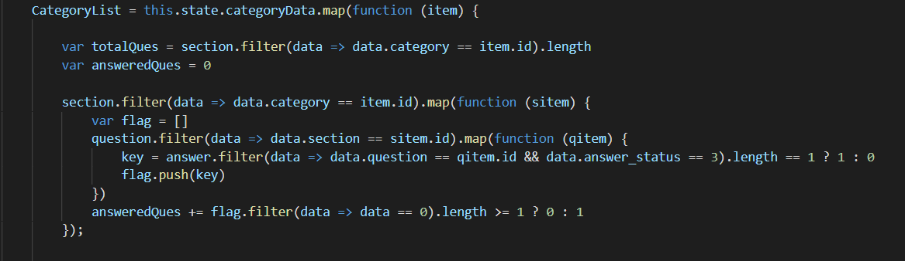
Category design
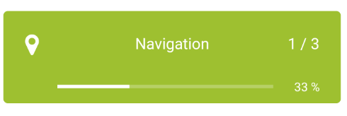
I started working on the section screen. The react-native-router-flux package provides facility to pass parameter while navigating
between different screens. Using that, I can pass the selected category when navigating to the
section screen from category screen and filter all the sections available in the selected category
and display them in a list. I also add a flag to each section indicating whether all the questions
in that section are answered. The user can select the section and can view all the questions
in that section and submit their response.
Code to pass parameter between screen action
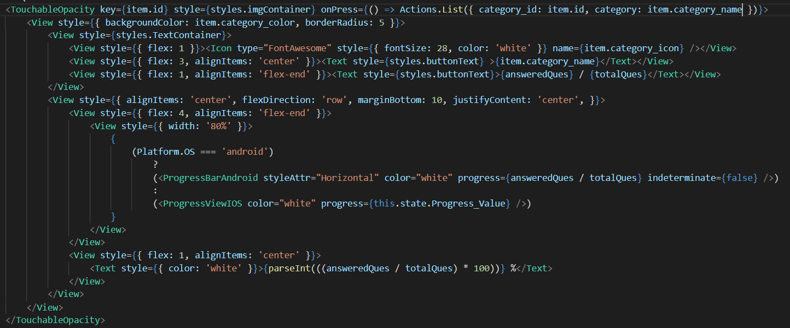
List screen with status
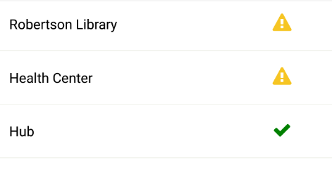
This is the actual screen where an user can enter their answers to the reconnaissance questions. Every question will be displayed
from the database. If a section has multiple questions the questions will be displayed in many
pages (as not all questions can be presented in one page). The user can swipe through the pages
and provide answers for these questions. I categorised the questions in three categories. They
are
1. Text questions (Answer to this question is by typing some text)
2. Link questions (For this question the user has to visit some website links and gather
some information)
3. Task questions (For this question, the user has to find some building or location
in the campus)
For text question, the user has to press the submit button after answering the question.
For the link question, the user presses the link and is shown appropriate information. For the
task question, the answer provided by the user needs to be validated. For example, a task might
to be find a particular book shelf in a library. To do this, I need to validate whether the student
found the correct location. For this I decided to make use of QR code validation. The user can
easily answer the question by finding the place by reading the instruction given along with the
question and scan the QR code pasted in that location.
For the task question, I need to add a privilege for the admin in Django application
to generate QR code for a question.
screens shot of Different question type
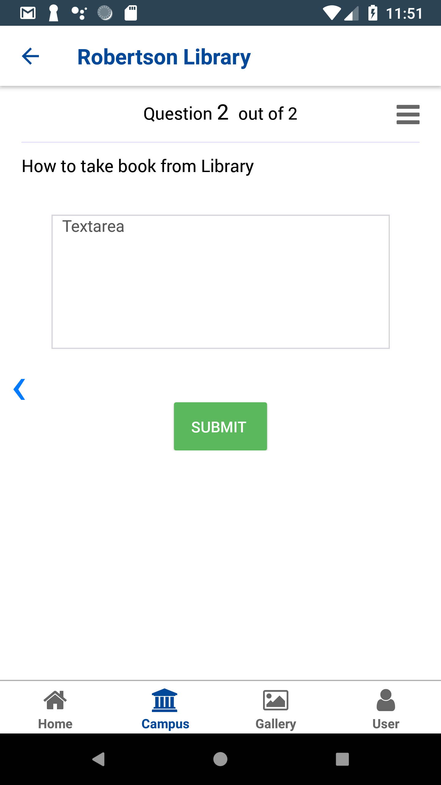
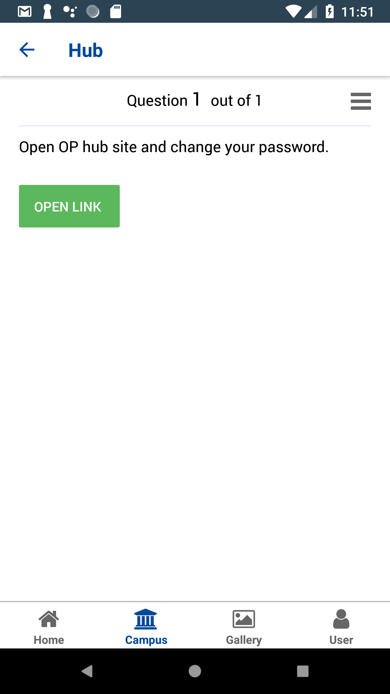

Now I am working on the user profile screen. This screen shows the information about the user available in the user table
and displays them on the screen. I am going to use the card and avatar element available in the
ReactNative element package which I already installed in this project. In this screen, there
will be a logout button for the user to logout from the application. After the user logs out,
the system will clear the user login details in the memory (i.e., AsyncStorage will be cleared).
The user will then be directed to the login screen.
screens shot of user screen
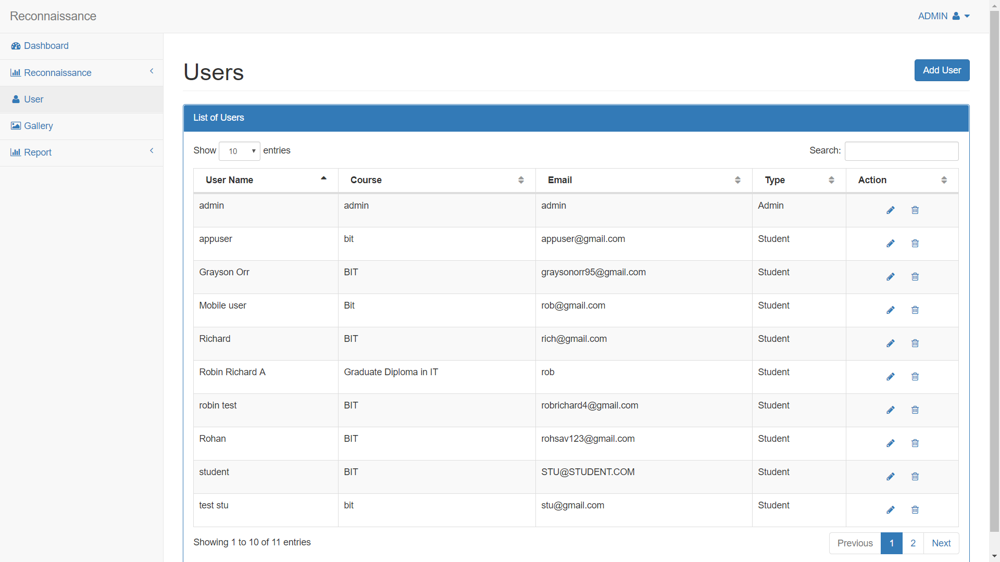
Now I am having a problem when navigating back from the current screen to the previous screen (e.g. reconnaissance screen
or section screen to category screen). It displays the old data and does not display the updated
data from the database. I did some search on the internet on refreshing the screen while navigating
back to previous screen and found about navigation listeners (e.g. didFocus and didBlur). When
a user wants to go back to the previous screen from the current screen, the current screen’s
didBlur method will blur the screen while the previous screen’s didFocus fetches the refreshed
data on the previous screen. I created a separate method to add each of those listeners (see
snippet below).
Code snippet for adding the two types of listeners are given below:
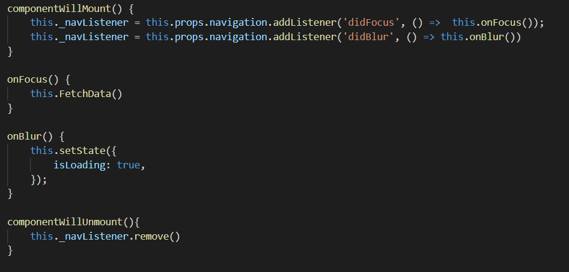
To validate the task questions, the admin needs to create QR code for the questions. For this I used Django QR code package.
I wrote the code to get the validator column data of a question from the question table in the
database and generated the QR code with that validator for that question. The validator column
has string data that represents an unique identifier. This identifier is displayed in the form
of QR code. The admin can get the QR code as a PDF file. For PDF generation I am using ReportLab
Example code snippet of the QR code generation with repotlab method is given below.
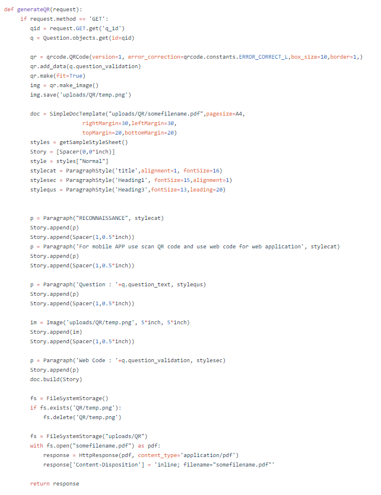
Today I am going to work on implementing profile picture upload option in User creation of Django application . PythonAnywhere
allows files to be uploaded. I used Ajax post request to send the image file with form data to
a Django method. Then I retrieve the image file from the request and store it in a file location
in PythonAnywhere server and store the file path of that image in the database.
Then I changed my user screen in the mobile app so that it fetched the profile picture
of the user from the PythonAnywhere server and shows it in the screen in an avatar element provided
by the React-Native-Elements package.
Screen shop of upload page.
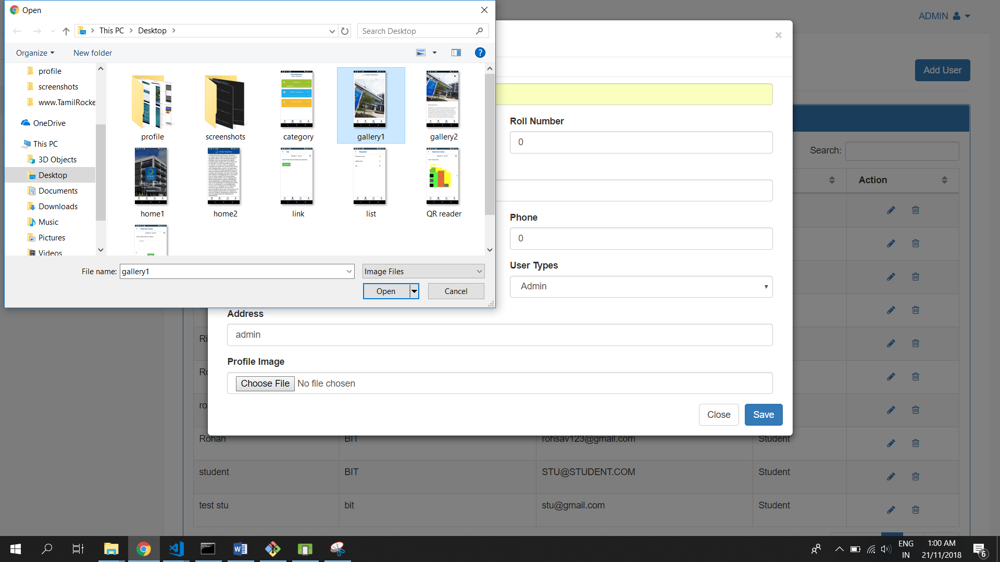
Today I am working on the user registration screen in the React Native app. Any user can install the app and register using
his/her email address and sign in to the application. I used “tcomb-form-native” which provides an
easy way to create forms for the user registration screen. The user can enter all the details
in that screen (e.g. user name).
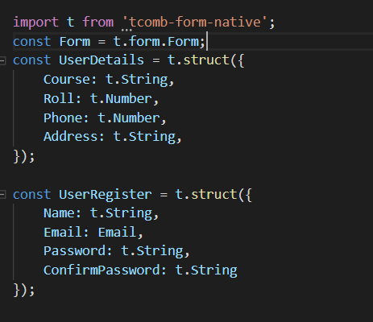
Once the user details are entered, I retrieve them and save them in the user table of
the database and then Django server will send an email with the link to the given email address.
The user’s status in the database table at this stage will be inactive. Hence, the user needs
to activate their credentials by clicking on the link given in the email. Upon activation, the
user status becomes active. After registration, the screen will redirect to the profile picture
upload screen where users can upload their profile picture or skip if they do not want to upload
the profile picture.
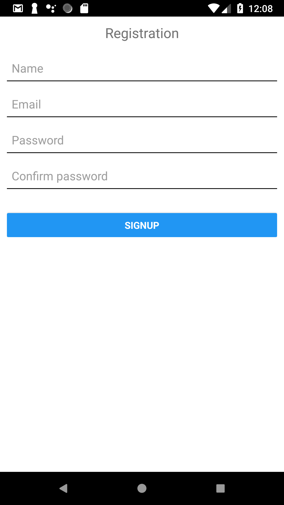
In Profile Picture Upload screen, I am using React Native module called “react-native-image-picker” (https://github.com/react-community/react-native-image-picker)
to select photo from the mobile device and another module called “rn-fetch-blob” to send the
selected image file to the Django server.
Code snippet
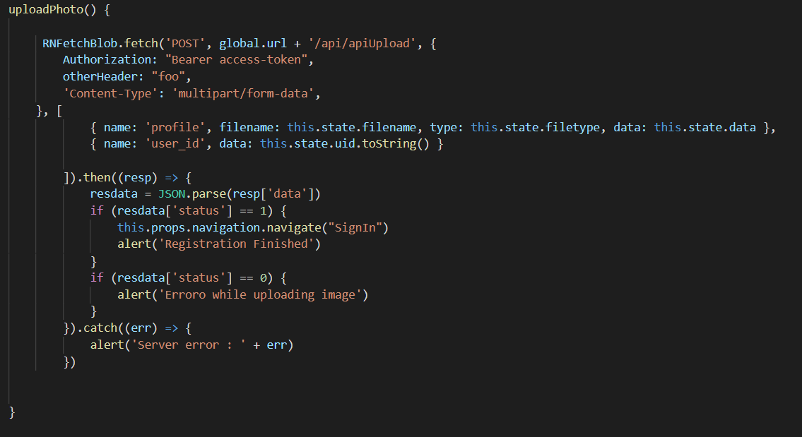
No class - polytech closed. I was holidaying
After the long weekend break, I am excited to be back to work on popup modal dialog. It is used show tips and instructions
to the app users. I used react-native-modal
which provides an easy way to display pop-ups. But I did not like that UI because it was too plain. So, I changed the style
into a modern looking and attractive pop-up (called border radius style – see screenshot and
code below) and by writing some custom CSS.
Code snippet of CSS
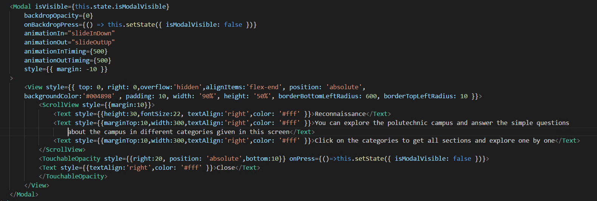
Old model and new model Screenshots
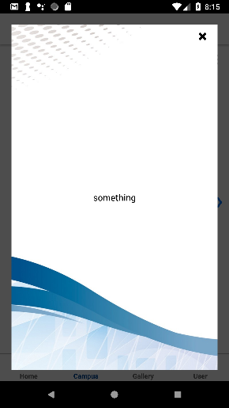

Today I am working on the Gallery screen. Previously the Gallery screen in the mobile application displayed only the images
stored in the application were static (i.e., once the application is installed there was no way
of adding new images or updating the old ones in the gallery). However, I would like this to
be dynamic so that admin can change the images whenever he/she wants to change and this is reflected
in the mobile app. For example, if information about a new building needs to be included, the
image and description can be uploaded to the server by the admin anytime which then gets pushed
to the mobile app.
So, whenever the gallery screen gets focus, it retrieves the available images from the
database and displays all of them in the app.
Code snippet of Fetching gallery images
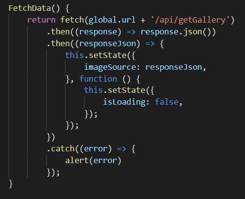
In the Reconnaissance screen, to read the QR code I used the react-native-qrcode-scanner
package and it helps to capture the QR code through the camera using QR scanner.
Code snippet of QR reader
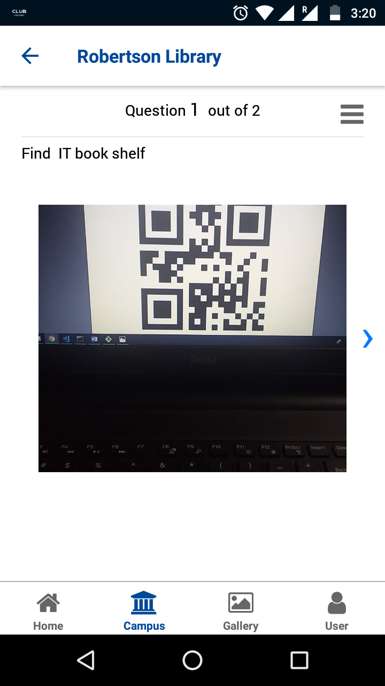
To implement this functionality, I needed to create only access permissions in the android
manifest file for camera and storage.
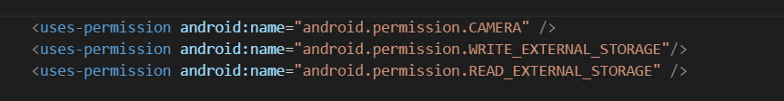
Today I am planning to work on Reconnaissance report, which will have all the questions and the responses submitted by a
particular user. I am going to add one more functionality to the Django application that allows
the admin to view the report of all the responses of a student. The report will be shown as a
PDF document Django server which contains all the questions and the responses given by the user.
I used the same report lab PDF generator used to generate QR code PDF as indicated in an earlier
post. The admin can download or print the PDF if needed
Screenshot of report
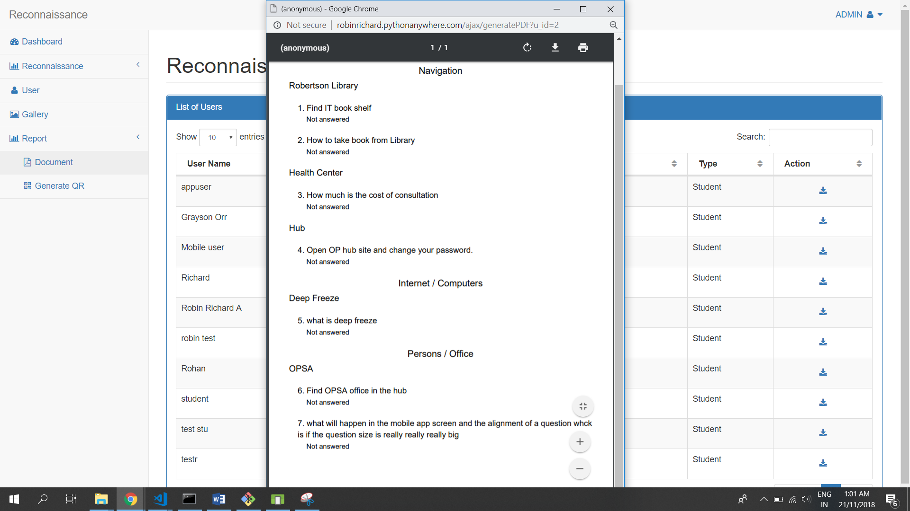
I have pretty much done all the development work. Today I am working on the validations part for the Django web application.
I have done all the form validations such as required field validation, user email existence
for all the webpages in the application. Screenshots and code of validations are provided below.
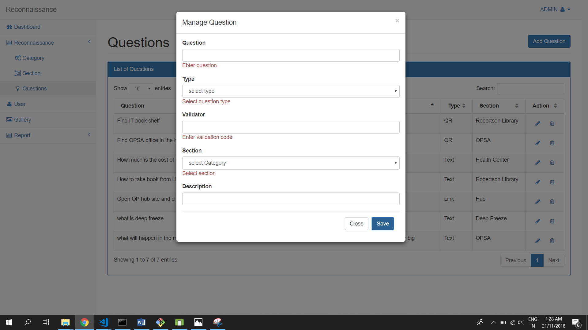
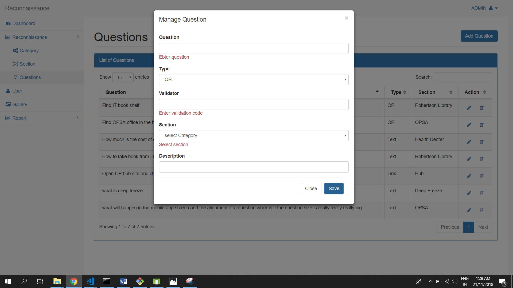
Code sippet of jquery for validation
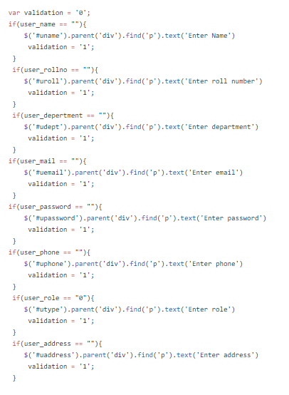
Today I have done all the validations for the mobile application. Similar to the web application, I did all the form validations
such as required field validation and user email existence on registration screen and other required
field validations in Reconnaissance screen. See screenshots below.

I also added a help popup that shows help messages when the category screen is focussed
(see screenshot below).
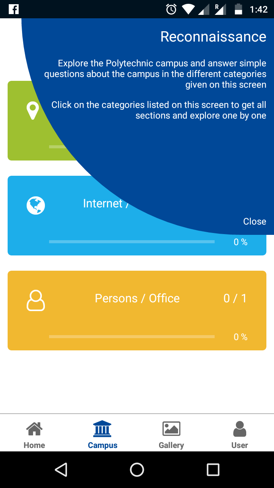
The client and server side implementation and validation are now complete. In the software development life cycle, testing
is vital to ensure the overall quality. Today I am very excited to test my app. I tested both
web and mobile applications with new data and used all the functionalities to make sure that
everything is working as expected.
Hurray! Everything is working fine.
Yay! It is the final week for the project completion. I am finally trying to upload the BITCampus application to the play store using the BIT account. I faced a problem in bundling scripts and images from the React Native to Android. I tried many solutions from the internet and nothing worked. At the end of the day I found that it was a silly mistake. I was trying to bundle images that had already been bundled in the to-be-deployed folder. This was causing conflicts. However, the error message wasn’t useful which showed “apt error”. I had to google the reason for the error and figured out the reason. To fix this issue, I deleted the src folder from the android project and then created the bundle successfully. I uploaded the apk file to the play store and you can now download it from this link
Today is the last day in the project room. I deleted test data and added the real data provided by Joy Gasson at the start
of the project. I have tested my application using the live data.
Yay, things are working as expected. I am delighted that I was able to complete the project
successfully.
I learnt a lot from this project. Below, I have highlighted certain specific aspects
I learnt from this project.
a) NativeReact was a new framework and I had to learn it from scratch myself. That was
a good learning experience.
b) This project provided opportunities for me to develop both the client side mobile
application and the server side web application. The skills I learnt will be valuable for my
aspirations to become a web-developer and/or mobile-app developer.
c) Image uploading from a client to a server and displaying a stored image to a mobile
application was new to me. I am glad to have learnt the skills to perform this activity.
d) Generating QR code and reading QR code was also new to me. I learnt how to generate
and read this. Generation of QR code was done in the server side using Django and the reading
was performed through the mobile app.